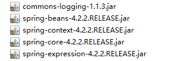
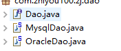
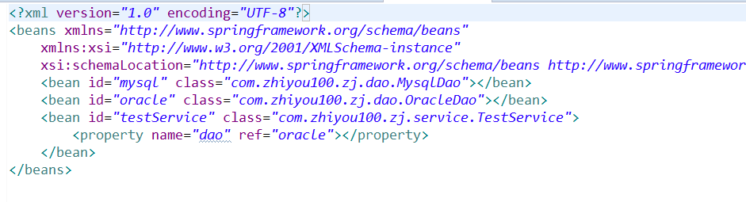
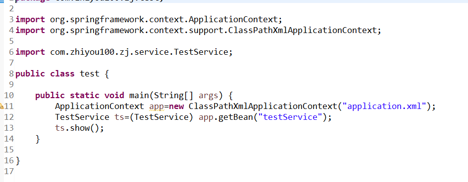

Spring是一款轻量级。主要功能是ioc控制反转，DI依赖注入，Aop面向切面：解决的是在编程中的解耦合，硬编码，很好的解决了程序的扩容及修改
1、ioc控制反转：是spring的核心，是一种思想，是将Java中的对象都交由spring进行创建，生命周期，销毁都是由spring进行控制，让Java的编程解耦合
2、di是ioc的一种方法，将需要创建的对象进行注入到配置文件中
3、aop面向切面，是在执行的类或者方法之前，之后，之中插入另一个方法或者其他
Demo
一、导入jar包

二、进行bean创建
将需要进行轮换的类进行创建，并抽其共同方法成接口

三、进行spring的配置文件的配置

bean代表的是一个类对象的标签，id属性方便进行调用 ，class，注入的实体类的全类名，这样就是将一个类进行实列化
property是属性，调用该类的属性，name对应的是属性名，只有set方法才能使用property标签，属性ref代表的是引用其他的bean标签，value是进行赋值（String，以及基本数据类型）
四、加载配置文件
